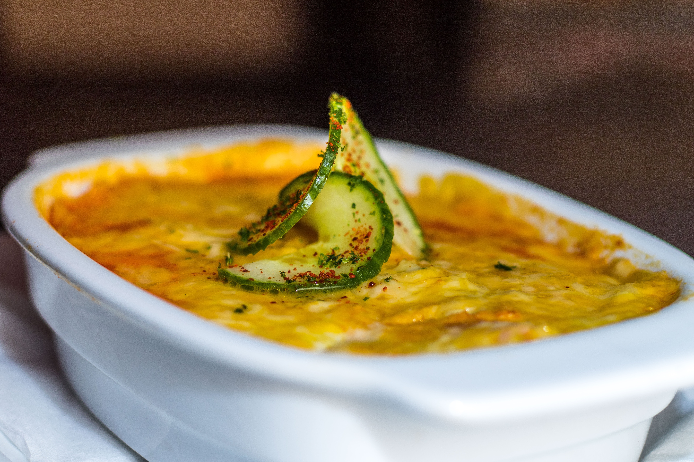

Lasagna

Description
This lasagna is a very hearty recipe that will restore your happiness no matter what time of the year it is
Ingredients
- Oil and salt
- 6-8 pasta boards
- 400 g of minced meat
- 1 onion
- 4 cloves of garlic
- 500 gr of bechamel sauce
- 300g of grated cheese
- One can of tomato sauce
- Pepper, chilli and some turmeric
Steps
- Warm the oven to 200 degrees celsius. Oil an ovenproof bowl for the lasagna.
- Mince onion and garlic.
- Add oil to a pan and fry onion and garlic until nice and golden.
- Add the minced meat and fry until done. Add pepper, salt, chilli and turmeric.
- Add the tomato sauce and turn the heat down.
- Start layering the dish to the oven bowl.
- Add the tomato sauce, then cover with lasagna boards and bechamel. Add cheese on top. Repeat how mahy times necessary
- Cook in the oven for 45 minutes.
Return to the recipe book